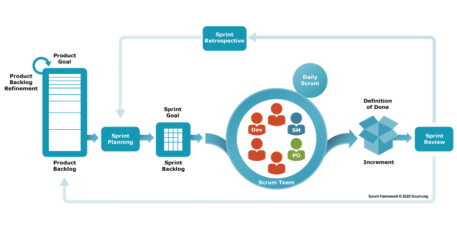

Pengertian Scrum
Scrum adalah kerangka kerja manajemen yang digunakan tim untuk
melakukan pengaturan secara mandiri dan bekerja menuju tujuan bersama.
Scrum menjelaskan serangkaian pertemuan, alat, dan peran untuk pelaksanaan
proyek secara efisien. Sama seperti tim olahraga yang berlatih untuk pertandingan besar,
praktik Scrum memungkinkan tim untuk melakukan pengelolaan secara mandiri, belajar dari
pengalaman, dan beradaptasi dengan perubahan. Tim perangkat lunak menggunakan Scrum untuk
menyelesaikan masalah kompleks dengan biaya yang efektif dan berkelanjutan.
Apa itu metodologi Scrum?
Prinsip dan nilai tertentu menjadi ciri metodologi Scrum:
Prinsip-prinsip Scrum untuk keberhasilan proyek
Transparansi
Tim bekerja di lingkungan tempat setiap orang menyadari tantangan yang mungkin dialami orang lain.
Percakapan tatap muka yang teratur antara
anggota tim lintas fungsi dan pemilik proyek mencegah miskomunikasi dan kemacetan informasi.
Refleksi
Poin refleksi yang sering dibangun ke dalam kerangka kerja memungkinkan anggota tim untuk meninjau
progres mereka. Manajer proyek menggunakan wawasan dari pertemuan tinjauan ini untuk melakukan perkiraan
dan perencanaan di masa mendatang. Sebagai hasilnya, proyek bisa berjalan lebih efisien, sesuai anggaran,
dan sesuai jadwal.
Adaptasi
Anggota tim dapat mengutamakan kembali tugas berdasarkan perubahan kebutuhan pelanggan. Mereka memutuskan
tugas mana yang diselesaikan terlebih dahulu dan yang dipertahankan di masa mendatang.
Nilai Scrum untuk tim proyek
Tim Scrum mengikuti lima nilai inti.
Komitmen
Anggota Tim Scrum berkomitmen untuk tugas dan tujuan berbasis waktu serta berdedikasi untuk
perbaikan berkelanjutan guna menemukan solusi terbaik.
Keberanian
Tim Scrum menunjukkan keberanian dengan mengajukan pertanyaan terbuka dan menantang.
Mereka melakukan diskusi yang jujur dan terbuka guna mendapatkan solusi terbaik.
Fokus
Selama periode tertentu, anggota tim akan bekerja dari Backlog Produk tugas.
Mereka akan fokus pada tugas-tugas yang dipilih sehingga mampu menyelesaikan proyek dalam
kerangka waktu yang terbatas.
Keterbukaan
Anggota Tim Scrum menerima ide dan kesempatan baru yang mendukung pembelajaran individu dan keseluruhan kualitas proyek.
Rasa Hormat
Anggota tim menghormati manajer proyek, satu sama lain, dan proses Scrum. Budaya saling menghormati ini
menciptakan semangat gotong royong dan kerjasama dalam tim.
Bagaimana cara kerja Scrum?
Scrum adalah kerangka kerja yang mudah dipahami, tetapi sulit dikuasai. Rekan pencipta scrum, Jeff
Sutherland dan Ken Schwaber, menjelaskan konsep dasar dalam Panduan Scrum. Panduan tersebut
memberikan gambaran umum proses scrum secara detail dan cara menerapkannya secara efektif.
Inti dari Scrum adalah tim yang mengatur pemberian nilai secara mandiri pada pelanggan dalam
periode waktu yang disepakati yang disebut Sprint. Scrum menetapkan artefak, peran, dan peristiwa
yang berkaitan dengan masing-masing Sprint. Mari kita lihat detailnya di bawah ini.
Apa itu artefak Scrum?
Tim Scrum menggunakan alat yang disebut artefak Scrum untuk menyelesaikan masalah dan mengelola
proyek. Artefak Scrum memberikan perencanaan dan informasi tugas penting pada anggota tim dan
pemangku kepentingan. Ada tiga artefak primer:
Backlog Produk
Backlog Produk adalah daftar dinamis fitur, persyaratan, peningkatan, dan perbaikan yang harus
diselesaikan untuk keberhasilan proyek. Backlog Produk pada dasarnya adalah daftar tugas tim yang
terus-menerus dipertahankan dan diutamakan kembali agar sesuai dengan perubahan pasar. Pemilik
produk memelihara dan memperbarui daftar, menghapus item yang tidak relevan dan menambahkan
permintaan baru dari pelanggan.
Sprint Backlog
Sprint Backlog adalah daftar item yang harus diselesaikan oleh tim pengembangan dalam siklus Sprint
saat ini. Sebelum setiap Sprint, tim memilih item yang akan dikerjakan dari Backlog Produk. Sprint
Backlog sifatnya fleksibel dan dapat berkembang selama Sprint.
Increment
Increment adalah suatu langkah menuju tujuan atau visi. Increment adalah produk akhir yang dapat
digunakan dari Sprint. Tim dapat mengadopsi metode yang berbeda untuk menentukan dan
mendemonstrasikan Tujuan Sprint mereka. Terlepas dari fleksibilitasnya, Tujuan Sprint dasar—yang
ingin dicapai tim dari Sprint saat ini—tidak dapat dikompromikan.
Misalnya, beberapa tim memilih untuk merilis sesuatu kepada pelanggan mereka di akhir Sprint,
sehingga Tujuan Sprint mereka akan selesai setelah perubahan perangkat lunak dirilis. Tim lain
mungkin akan berusaha menyelesaikan seperangkat fitur yang akan dirilis secara bersamaan.
Dalam hal ini, Tujuan Sprint akan diselesaikan saat fitur berhasil diuji.
Apa saja peran Scrum?
Tim Scrum membutuhkan tiga peran khusus: Pemilik Produk, Pemimpin Scrum, dan tim pengembangan.
Pemilik Produk
Pemilik Produk fokus untuk memastikan bahwa tim pengembangan memberikan nilai terbaik bagi bisnis.
Mereka memahami dan mengutamakan kebutuhan pengguna dan pelanggan akhir yang berubah. Pemilik
produk yang efektif melakukan hal berikut:
- Memberikan panduan yang jelas pada tim mengenai fitur yang harus ditampilkan selanjutnya.
- Menjembatani celah antara keinginan bisnis dan pemahaman tim.
- Memutuskan waktu dan seberapa sering perilisan harus dilakukan.
Pemimpin Scrum
Pemimpin Scrum adalah orang terbaik di dalam tim untuk Scrum. Mereka bertanggung jawab atas efektivitas
Tim Scrum. Mereka melatih tim, Pemilik Produk, dan bisnis untuk meningkatkan proses Scrum dan
mengoptimalkan pengiriman. Pemimpin Scrum juga bertanggung jawab untuk melakukan hal-hal berikut ini:
- Menjadwalkan sumber daya yang diperlukan untuk setiap Sprint.
- Memfasilitasi acara Sprint dan pertemuan tim.
- Memimpin transformasi digital dalam tim.
- Memfasilitasi pelatihan tim saat mengadopsi teknologi baru.
- Berkomunikasi dengan grup eksternal untuk memecahkan tantangan yang mungkin dihadapi tim secara
keseluruhan.
Tim pengembangan Scrum
Tim Scrum terdiri dari penguji, perancang, spesialis UX, teknisi Ops, dan developer. Anggota
tim memiliki keterampilan yang berbeda dan saling melatih satu sama lain, sehingga tidak ada satu
orang pun yang menjadi hambatan saat memberikan pekerjaan.
Jeff Bezos, pendiri Amazon, merekomendasikan aturan dua pizza saat memutuskan ukuran tim: Sebuah
tim harus cukup kecil untuk berbagi dua pizza.
Tim pengembangan Scrum melakukan hal-hal berikut:
- Bekerja secara kolaboratif untuk memastikan penyelesaian Sprint yang sukses.
- Mempertahankan praktik pengembangan berkelanjutan.
- Mengatur dan mendekati proyek mereka secara mandiri dengan sikap yang jelas.
- Mendorong perencanaan dan perkiraan jumlah pekerjaan yang dapat diselesaikan untuk setiap Sprint.
Apa saja acara Scrum?
Acara Scrum atau upacara Scrum adalah serangkaian pertemuan berurutan yang dilakukan oleh Tim Scrum secara
teratur. Beberapa acara Scrum mencakup berikut ini:
Perencanaan Sprint
Dalam acara ini, tim memperkirakan pekerjaan yang akan diselesaikan di Sprint selanjutnya. Anggota menetapkan
Tujuan Sprint yang spesifik, terukur, dan dapat dicapai. Di akhir pertemuan perencanaan, setiap anggota Scrum
mengetahui cara setiap Increment dapat diberikan di Sprint.
Sprint
Sprint sebenarnya adalah periode waktu aktual saat Tim Scrum bekerja bersama untuk menyelesaikan Increment.
Biasanya Sprint berlangsung selama dua minggu, tetapi dapat berbeda-beda tergantung pada kebutuhan proyek
dan tim. Semakin kompleks pekerjaan dan semakin banyak yang tidak diketahui, Sprint seharusnya menjadi semakin
pendek.
Scrum atau stand-up harian
Scrum harian adalah pertemuan singkat saat anggota tim melakukan check-in dan membuat rencana untuk hari ini.
Mereka melaporkan pekerjaan yang diselesaikan dan menyampaikan tantangan yang dihadapi saat memenuhi Tujuan
Sprint. Disebut stand-up karena tujuannya menjaga agar pertemuan tetap singkat—seperti ketika semua orang berdiri.
Tinjauan Sprint
Di akhir Sprint, tim berkumpul untuk sesi informal untuk meninjau pekerjaan yang telah diselesaikan dan
menunjukkannya kepada pemangku kepentingan. Pemilik Produk mungkin juga mengerjakan ulang Backlog Produk
berdasarkan Sprint saat ini.
Retrospektif Sprint
Tim datang bersama-sama untuk mendokumentasikan dan mendiskusikan mana yang berhasil dan tidak berhasil
selama Sprint. Ide yang dihasilkan digunakan untuk meningkatkan Sprint di masa mendatang.
Mengapa Scrum penting dalam pengembangan perangkat lunak?
Semua tim, seperti SDM, pemasaran, dan perancangan menggunakan Scrum secara efektif. Namun, Scrum
lebih umum dalam tim pengembangan perangkat lunak dan rekayasa. Scrum memungkinkan tim untuk
merespons perubahan persyaratan dengan cepat tanpa membuat biaya dan anggaran berputar diluar
kendali. Scrum penting karena beberapa alasan berikut:
Kemampuan untuk mempertahankan kualitas dalam situasi yang menantang
Pemeriksaan jaminan kualitas dibangun ke dalam kerangka kerja Scrum. Tim menetapkan persyaratan di
awal setiap Sprint. Tim juga menilai perangkat lunak atau siklus hidup produk secara komprehensif
sambil menetapkan visi terhadap penyelesaian. Ini berarti persyaratan tetap relevan dan dapat
dicapai dalam jangka waktu yang singkat. Umpan balik Pemilik Produk dan tinjauan Sprint yang
teratur memungkinkan peningkatan tim berkelanjutan di seluruh proyek.
Peningkatan laba atas investasi
Tim Scrum mengutamakan persyaratan berdasarkan nilai pelanggan dan analisis risiko. Fokus ini ada
pada pengembangan produk pekerjaan primer yang dapat dirilis ke pasar guna mendapatkan umpan balik
pelanggan dengan cepat. Pengembangan scrum ditandai dengan berkurangnya cacat yang menghabiskan
banyak biaya, efisiensi tim, dan pendekatan fail-fast yang menghemat uang dalam jangka panjang.
Tim yang lebih bahagia dan lebih produktif
Struktur tim yang dikelola dan diatur secara mandiri memungkinkan anggota menjadi lebih kreatif dan
inovatif. Anggota memiliki fleksibilitas untuk mengatur pekerjaan mereka sesuai dengan gaya kerja,
kepribadian, dan tujuan hidup pribadi mereka. Bekerja secara lintas fungsi memungkinkan anggota
untuk mempelajari keterampilan baru dan saling membimbing. Hasilnya, Scrum menciptakan lingkungan
dukungan dan kepercayaan, meningkatkan motivasi dan moral orang-orang secara keseluruhan.
Metrik relevan yang meningkatkan perkiraan
Tim Scrum memilih metrik mereka sendiri untuk mengukur performa proyek. Mereka memperkirakan garis
waktu, anggaran, dan metrik kualitas berdasarkan pengalaman dan kemampuan mereka. Pemilik Produk
memiliki kendali karena perkiraan bersifat relatif. Tim mendapatkan lebih banyak dukungan di awal
proyek dan secara alami meningkat seiring waktu. Pemangku kepentingan proyek meninjau produk kerja
dan memberikan umpan balik secara teratur untuk memastikan bahwa proyek tetap sesuai rencana.
Scrum vs. agile—apa perbedaannya?
Agile merujuk pada pola pikir atau cara berpikir dalam pengembangan perangkat lunak. Agile adalah
filosofi yang diadopsi di tingkat organisasi agar setiap anggota tim fokus pada peningkatan
berkelanjutan dan penyampaian nilai kepada pelanggan. Scrum adalah kerangka kerja untuk
menyelesaikan pekerjaan di dalam agile. Scrum menggunakan semua prinsip inti agile untuk menetapkan
metode guna memfasilitasi sebuah proyek. Namun, penting untuk diperhatikan bahwa agile tidak selalu
berarti Scrum. Banyak metodologi berbeda menggunakan pendekatan agile untuk manajemen proyek.
Bagaimana tim pengembangan Scrum dapat mengadopsi DevOps?
DevOps menggabungkan filosofi budaya, praktik, dan alat yang meningkatkan kemampuan organisasi
untuk memberikan aplikasi dan layanan dengan kecepatan tinggi. DevOps menghilangkan silo antara tim
pengembangan dan operasi. Teknisi bekerja di seluruh siklus hidup aplikasi, mulai dari pengembangan
hingga pengujian, deployment, dan operasi. Ini membantu mengembangkan berbagai keterampilan yang
tidak terbatas pada satu fungsi.
Tim Scrum sangat tepat untuk mengadopsi DevOps. Mereka sudah menerapkan lintas fungsi dan iteratif.
Beberapa ide untuk integrasi DevOps antara lain sebagai berikut.
- Mengotomatiskan perangkat lunak yang menguji dan menulis tes baru untuk setiap pengembangan fitur
- Menggunakan tumpukan teknologi dan alat yang mendukung deployment berkelanjutan
- Merilis perubahan pada produksi di akhir setiap Sprint